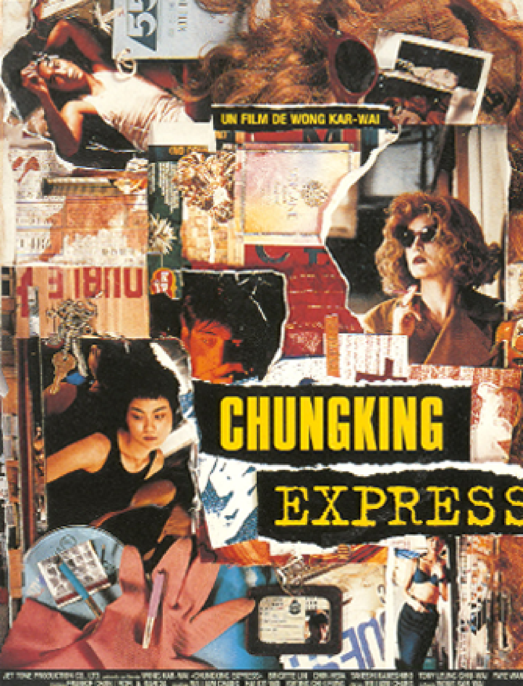
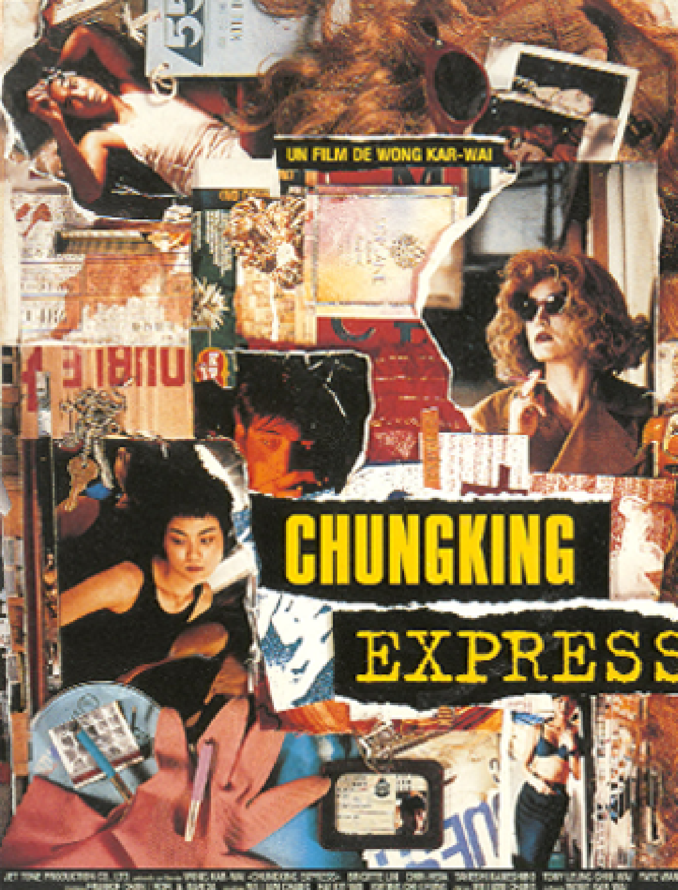

John Han

 

중경삼림 重慶森林: Chungking Express, 1994
줄거리
경찰 223(금성무 분)은 시간만 되면 패스트푸드점에서 헤어진 옛 애인을 기다린다. 자신의 생일이자 옛 애인과 헤어진 지 딱 한 달이 되는 5월 1일이 유통기한인 파인애플 통조림을 사 모으던 그는 한달 동안 그녀에게서 연락이 오지 않으면 그녀를 잊기로 마음먹는다. 같은 시간, 노랑머리 마약밀매 중계자(임청하 분)는 자신을 배신 한 마약 중개인을 제거한 뒤 술집을 찾고 그곳에서 경찰 223은 술집으로 처음 들어오는 여자를 사랑하겠노라 마음 먹는데…
영화속 좋아하는 명대사
이 방이 점점 감정이 생겨난다. 강한 줄 알았는데 이렇게 많이 울 줄은 몰랐다. 사람은 휴지로 끝나지만 방은 일이 많아진다.Eternal Sunshine Of The Spotless Mind, 2004
줄거리
평범하고 착한 남자 조엘과 화려하고 따듯한 여자 클레멘타인은 서로 다른 성격에 끌려 사귀게 되지만, 그 성격의 차이 때문에 점점 지쳐가고. 심한 말다툼을 한 후 더 이상 참을 수 없는 조엘은 아픈 기억만을 지워준다는 라쿠나社를 찾아가 클레멘타인의 기억을 지우기로 결심한다. 사라져 가는 기억 속 그녀의 모습은 사랑스럽게만 보이는데..이렇게 사랑은 지워지는 걸까?
영화속 좋아하는 명대사
잊혀진 세상에 의해 세상은 잊혀진다. 티 없는 마음의 영원한 햇살. 여기엔 성취된 기도와 체념된 소망 모두 존재한다.My Blueberry Nights, 2007
줄거리
아픈 이별을 경험한 엘리자베스(노라 존스)는 우연히 들른 카페에서 카페 주인 제레미(주드 로)를 만나고, 그가 만들어 주는 블루베리 파이를 먹으며 조금씩 상처를 잊어간다. 어느 날, 엘리자베스는 실연의 상처를 치유하기 위해 훌쩍 여행을 떠나고, 그녀를 사랑하고 있음을 깨달은 제레미는 매일 밤 그녀의 자리를 비워두고 기다리는데...
영화속 좋아하는 명대사 여기로 돌아오는 데 1년 가까이 걸렸다. 길을 건너는 건 그리 어려울 게 없었다. 건너편에서 누가 기다려 주느냐에 달렸을 뿐.